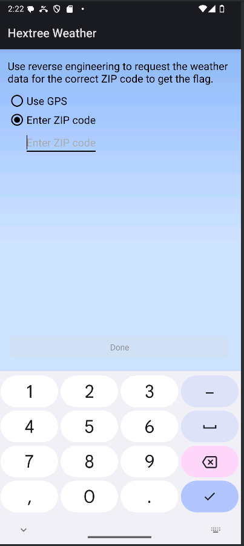
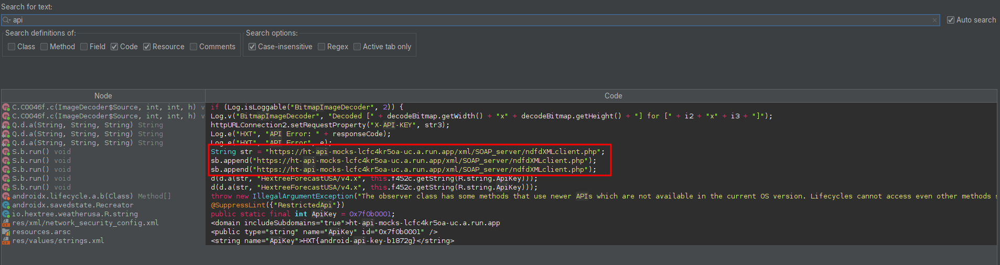
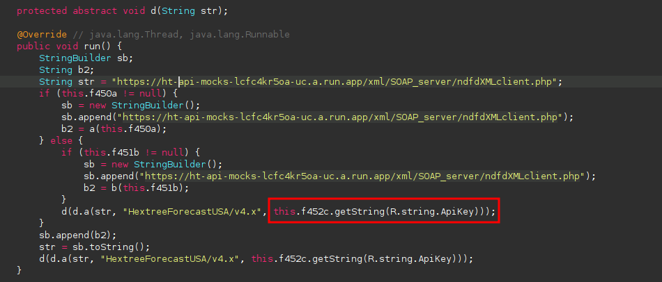
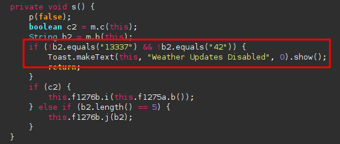
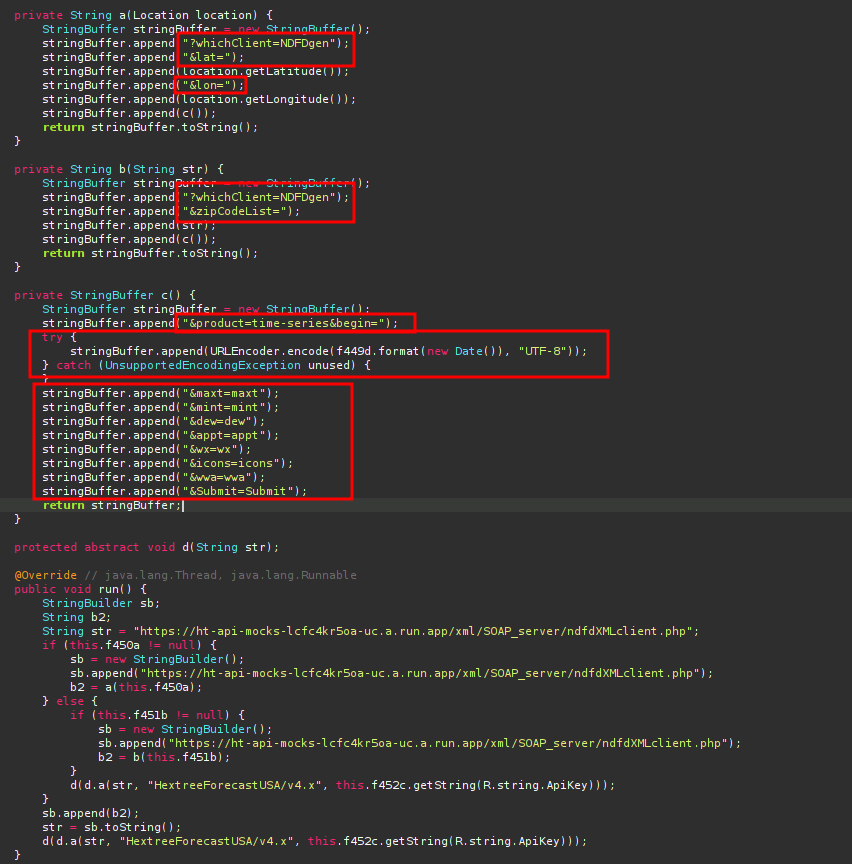
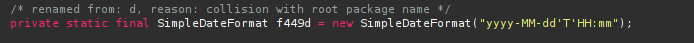
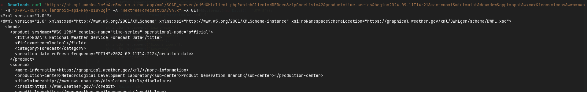
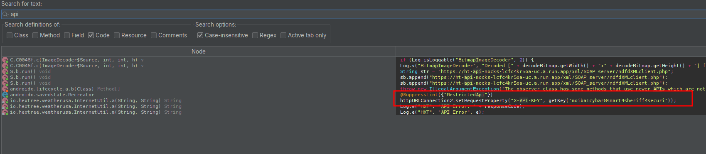
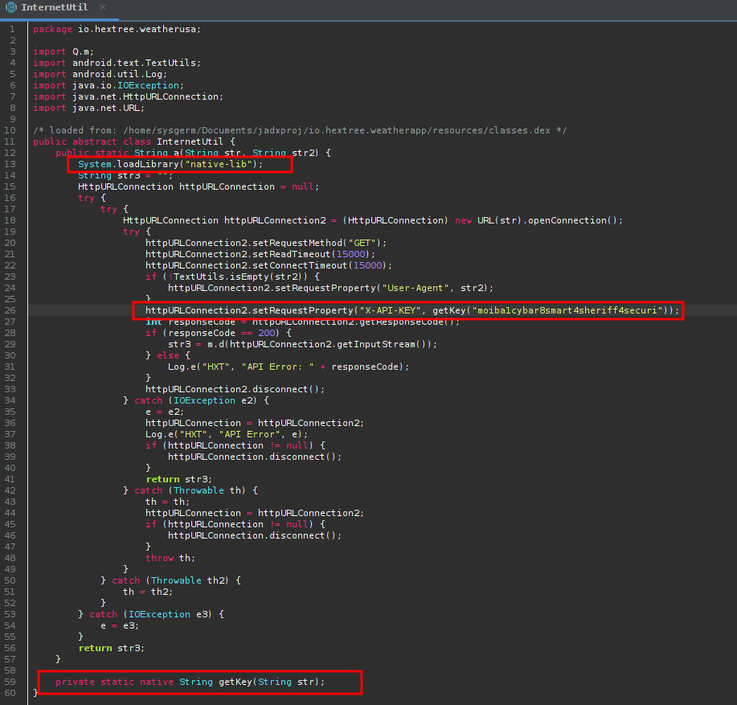
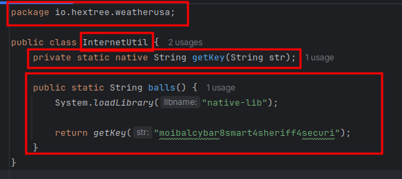

Weather app
Research goals
- What does the app do
- Where is the data coming from (custom API)
- What is the authentication (API)
- Why are the weather functions disabled
- Further reverse engineering of the API
- Reversing the updated package
What does the app do
The app looks like a weather app where u can give a zip code and it will give you the weather.

Where is the data coming from (custom API)
Upon further reverse engineering I used jadx to search for strings, I searched for API and made sure to also enable resources, and the we found it, it used a custom API:

What is the authentication (API)
After finding the api endpoint I noticed it also passed in an API key, which was stored inside of the strings.xml file.

Why are the weather functions disabled
It uses a zip to enable the weather functionality, when I looked at the MainActivity file I saw that it is comparing this zip with 13337, this was our way in!

Further reverse engineering of the API
To get our last objective I looked back at the api, I found the function where it passed in the apikey and found that it also needed some other settings to correctly send a good API call, without any errors.

The format of the time was also given above.

After forging my curl request, I could do an api call for any zip, even zip codes smaller than 5 characters.

curl "https://ht-api-mocks-lcfc4kr5oa-uc.a.run.app/xml/SOAP_server/ndfdXMLclient.php?whichClient=NDFDgen&zipCodeList=42&product=time-series&begin=2024-09-11T14:21&maxt=maxt&mint=mint&dew=dew&appt=appt&wx=wx&icons=icons&wwa=wwa" -H "X-API-KEY: HXT{android-api-key-b1872g}" -A "HextreeForecastUSA/v4.x" -X GET
Reversing the updated package
Now that we have successfully found the secret flag in the first application, we have a more obfuscated updated version of this application to also crack and reverse engineer.
When we try and find the string "api" in the files we can see it executes a function called getKey() with a string as value:

However if we go to this function call we notice that this function is not found in the "normal" code itself, this is found in the library, we can confirm this whenever we see these indicators:

We can get this lib file using apktool or jadx.
After we acquire this file we have a few options for finding out what the getKey() function does:
- Reversing the file with
ghidra - Network interception
- Implementing the lib into one of our projects to run the function
I will be trying out the 3rd option.
This were the steps I used to get the flag out if the library file:
- Open a poc project in
androidstudio(we will call the function over here) - Create a "jniLibs" in the
app/src/mainfolder for the imported native libraries - Put the libraries in this folder
Copy the package name and class name exactly how they are, this is needed for having the same function names that match the java names (u can see this whenever you are reversing this library in
ghidra)
- Now just execute the function and voila, your flag will be right there :)
These are the basics of reversing an android application, thank you all for reading along and happy hacking.